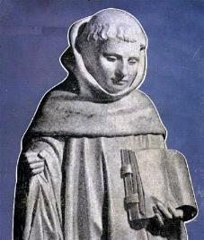
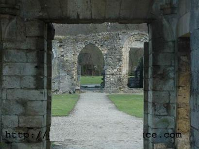
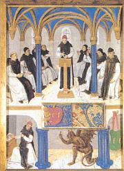
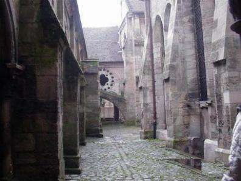

FUNDAÇÃO DE CLARAVAL - Em
junho de 1115 o Conde Hugo de Troyes
FUNDAÇÃO DE CLARAVAL - Em
junho de 1115 o Conde Hugo de Troyes
ofereceu uma área de terra, para que
fosse instalado um Convento nos seus domínios. Estevão prontamente aceitou e
decidiu colocar Bernardo na chefia da nova instituição. E forneceu mais uma
prova de sua bondade, ao incluir na comunidade do jovem abade, os seus quatro
irmãos, o tio, os primos e mais cinco outros rapazes, pois de acordo com o
costume cisterciense, uma colônia devia conter 12 religiosos além do abade.
É como se fosse o SENHOR e os 12 Apóstolos. E assim partiram os
13 jovens, cheios de ideal e de coragem.
O destino ficava a 140 quilômetros de Cister.
No dia 25 de junho de 1115 tomaram posse oficialmente
do local e mudaram o nome para Claraval (Clara
Vallis, Vale da Luz), porque devido a sua posição geográfica, ficava
o dia todo exposto aos raios do sol.
Enquanto os monges sob a direção do prior Gauthier
entregavam-se ao trabalho para erigir as construções, ele, em companhia de um
religioso de nome Elbold, foi encontrar-se com o Bispo, porque ainda não tinha
recebido a bênção abacial, ou mesmo a ordem do sacerdócio.
Entretanto, a luta pela existência
suportada pelos monges em Claraval, foi terrivelmente severa. A terra era dura
para o cultivo e não suficiente fértil. A possibilidade de receberem auxílio
de fora era remota, porque não eram conhecidos do mundo. E assim viveram
durante muitos meses com toda a sorte de privações.

No segundo ano de trabalho
a comunidade não estava resistindo mais ao grande número de dificuldades.
Com os olhos cheios de lágrimas rodearam Bernardo e lhe imploraram que os
reconduzisse de volta a Cister. Suas vestes estavam em farrapos, a saúde ameaçada
pela inanição em consequência da falta de uma substanciosa alimentação.
Deviam fugir daquele Vale, porque embora fosse muito bonito, devorava os seus
habitantes, porque as terras estavam cansadas e produziam muito pouco.
Em vão o Abade suplicou-lhes que tivessem
paciência. Nem sequer conseguiu induzi-los a que o acompanhasse numa oração de
socorro. Então sozinho, no meio dos monges, Bernardo ajoelhou-se e rogou a DEUS,
ao Pai da Misericórdia, que se apiedasse de seus pobres filhos e lhes minorasse
a angústia, como outrora ELE alimentara os israelitas no deserto. Mal terminara
a oração, sentiu no interior do coração uma voz que lhe dizia:
"Levanta-te Bernardo,
a tua prece foi atendida".
Ao mesmo tempo ouviu-se o som de rodas de
uma carroça que se aproximava. Era um carro repleto de mantimentos, oferta de Odo,
Prior de um estabelecimento beneditino que ficava próximo, o qual soubera dos
apuros da Comunidade e se apressara em socorrê-los.

A MÃO DE DEUS – Como o fato descrito,
diversos outros ocorreram. Foram acontecimentos notáveis que vieram em auxílio de Bernardo
e dos monges de Claraval, que aos poucos foram vencendo as dificuldades do cotidiano e
puderam viver com
normalidade, testemunhando que a presença do SENHOR era permanente, entre
os monges cistercienses.
Apresentamos a seguir alguns fatos, lembranças
inesquecíveis daquela época muito difícil.
Certo dia, Bernardo disse a um monge chamado Guibert:
- "Irmão,
necessitamos de sal. Leva o jumento e traz algum da cidade vizinha".
Inquiriu Guibert:
- "Reverendo
Padre, e a respeito do dinheiro"?
Respondeu Bernardo:
- "Para dizer a
verdade, há tanto tempo que não possuo ouro e nem prata, que já nem me lembro
da cor. Mas existe alguém lá em cima que conserva a minha bolsa e todos os
meus tesouros, ELE não permitirá que nos falte o dinheiro para a
compra".
- "Muito bem,
Reverendo Padre, farei como indica, mas se partir sem o dinheiro, voltarei sem o
sal".
- "Tem fé meu filho
- replicou Bernardo - o nosso
tesoureiro Divino acompanhará a tua jornada e não consentirá que te falte coisa alguma".
Com estas palavras, abençoou-o e mandou-o a cidade.
Quando o irmão Guibert se aproximava do destino,
encontrou um sacerdote que lhe perguntou de onde vinha e para onde se dirigia.
Satisfeito com a oportunidade, contou ao desconhecido
a situação em que estavam as coisas em Claraval, sem se esquecer de mencionar-lhe
o apuro em que o Abade lhe colocara, ao mandá-lo para o mercado sem dinheiro.
O bondoso padre comovido, levou-o para sua casa
onde lhe deu 20 litros de sal e cinquenta moedas de ouro.
No regresso, feliz com o êxito da missão,
encontrou-se com Bernardo. O Abade com simplicidade e uma maneira bem paternal,
falou:
"Podes crer, nada
é tão necessário a um cristão como a fé. Se tiverdes fé em DEUS, tudo
correrá bem, nada faltará".
Em outra ocasião, Gerardo que era o encarregado
da economia do Mosteiro, informou ao Abade que os gêneros alimentícios tinham
acabado, que não havia comida para os irmãos e nem meios para consegui-la.
Bernardo perguntou-lhe:
"De quanto precisa para as
necessidades presente"?
"Doze libras", foi à resposta.
O Santo afastou-se em silêncio para rezar.
Mais tarde, foi informado que uma dama de Chatillon
encontrava-se lá fora para conversar com ele. Ela estava com um sério problema. Vinha
solicitar as preces da confraria para o seu marido gravemente enfermo.

Bernardo depois de prometer-lhe as orações,
assegurou-lhe que no seu regresso a casa já encontraria o seu marido totalmente
restabelecido, como na verdade sucedeu.
Contudo antes de partir, a dama cheia de confiança
em face das palavras de Bernardo, entregou-lhe em agradecimento exatamente doze
libras, a soma que a comunidade necessitava para as despesas urgentes.
Muitos fatos desta natureza ocorreram durante
bastante tempo, até que o "demônio da fome", fosse finalmente
esconjurado de Claraval.
No ano 1117, entre as diversas pessoas que bateram
ao portão de Claraval, contam-se duas delas, cuja vinda, provocou uma alegria
especial no coração do Santo Abade. Foram seu irmão mais novo Nivard e seu
pai Tescelin.
Foi uma cena comovente e inesquecível, ocorrida
naquele dia do ano 1118 na Igreja da Abadia em Claraval, presenciar a cerimônia e
ver o velho fidalgo pronunciando os seus votos, aos pés do jovem Abade, seu
filho, prometendo obedecer-lhe até a morte, recebendo em seguida, já com o hábito
sagrado, o beijo da paz de seus lábios.
A vida de Tescelin como monge foi curta mas
invulgarmente fervorosa. Ao morrer no ano de 1120, atingira um tal grau de
santidade, que foi considerado Santo pela Comunidade.
 Próxima Página
Próxima Página
Página Anterior
Retorna ao Índice